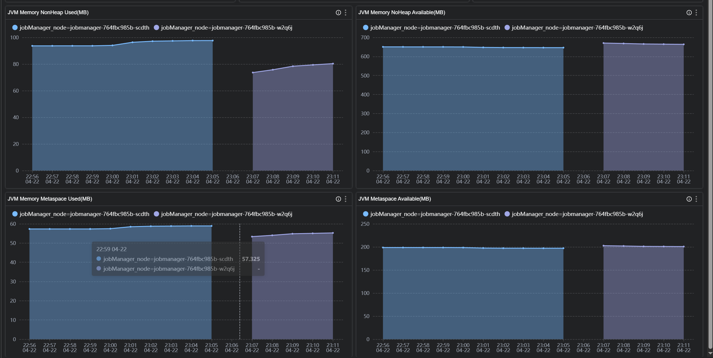
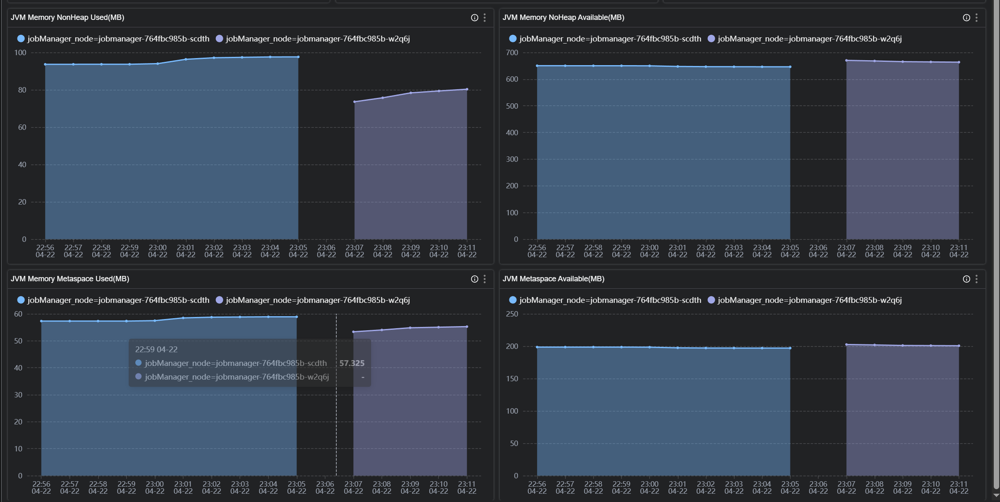
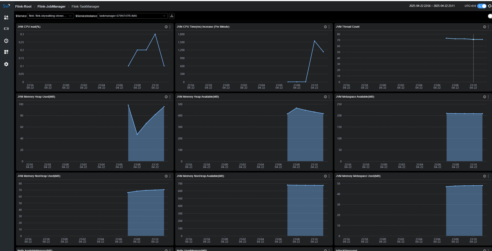
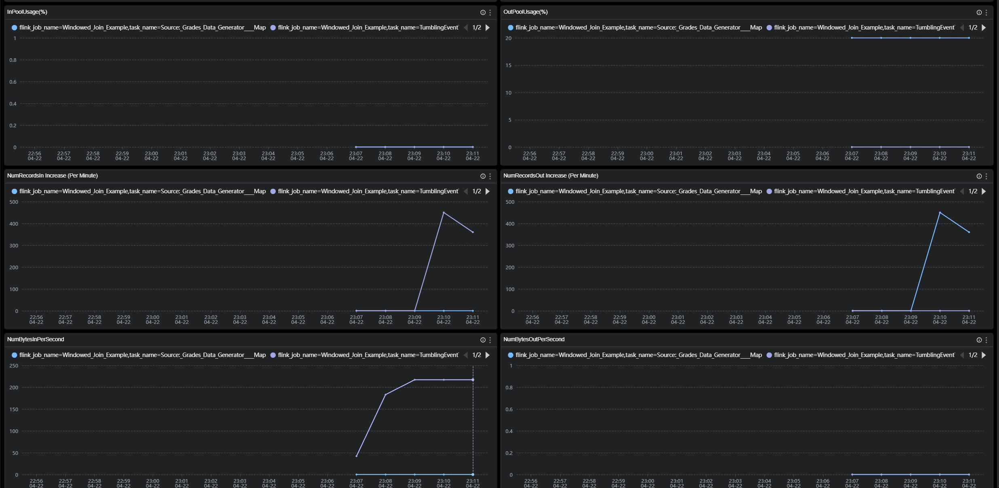
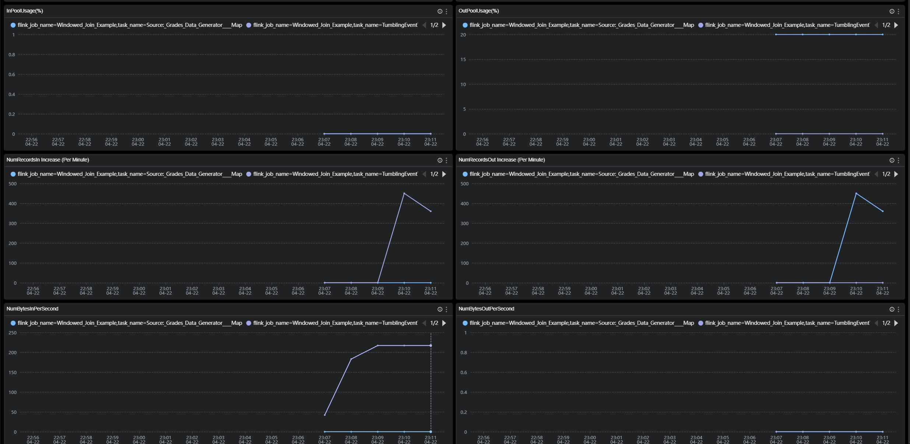

使用 SkyWalking 监控 Flink
SkyWalking 10.3 引入了新的 Flink 监控面板,本文将演示该监控面板的使用。
背景介绍
Apache Flink 是一个框架和分布式处理引擎，用于在无边界和有边界数据流上进行有状态的计算。Flink 能在所有常见集群环境中运行，并能以内存速度和任意规模进行计算。 从SkyWalking OAP 10.3 版本开始，新增了对来自Flink的指标数据监控面板，本文将展示并介绍如何使用 SkyWalking来监控Flink。
部署
准备
启动流程
- 启动
jobmanager和taskmanager - 启动
skywalking oap和ui - 启动
opentelmetry-collector - 启动job
DataFlow:

配置
docker-compose
version: "3"
services:
oap:
extends:
file: ../../script/docker-compose/base-compose.yml
service: oap
ports:
- "12800:12800"
networks:
- e2e
banyandb:
extends:
file: ../../script/docker-compose/base-compose.yml
service: banyandb
ports:
- 17912
jobmanager:
image: flink:2.0-preview1
environment:
- |
FLINK_PROPERTIES=
jobmanager.rpc.address: jobmanager
metrics.reporter.prom.factory.class: org.apache.flink.metrics.prometheus.PrometheusReporterFactory
metrics.reporter.prom.port: 9260
ports:
- "8081:8081"
- "9260:9260"
command: jobmanager
healthcheck:
test: ["CMD", "curl", "-f", "http://localhost:8081"]
interval: 30s
timeout: 10s
retries: 3
networks:
- e2e
taskmanager:
image: flink:2.0-preview1
environment:
- |
FLINK_PROPERTIES=
jobmanager.rpc.address: jobmanager
metrics.reporter.prom.factory.class: org.apache.flink.metrics.prometheus.PrometheusReporterFactory
metrics.reporter.prom.port: 9261
depends_on:
jobmanager:
condition: service_healthy
ports:
- "9261:9261"
command: taskmanager
healthcheck:
test: ["CMD", "curl", "-f", "http://localhost:9261/metrics"]
interval: 30s
timeout: 10s
retries: 3
networks:
- e2e
executeJob:
image: flink:2.0-preview1
depends_on:
taskmanager:
condition: service_healthy
command: >
bash -c "
./bin/flink run -m jobmanager:8081 examples/streaming/WindowJoin.jar"
networks:
- e2e
otel-collector:
image: otel/opentelemetry-collector:${OTEL_COLLECTOR_VERSION}
networks:
- e2e
command: [ "--config=/etc/otel-collector-config.yaml" ]
volumes:
- ./otel-collector-config.yaml:/etc/otel-collector-config.yaml
expose:
- 55678
depends_on:
oap:
condition: service_healthy
networks:
e2e:
如果是使用pushGateWay模式来暴露metrics数据请参考。
OpenTelemetry-collector
receivers:
prometheus:
config:
scrape_configs:
- job_name: "flink-jobManager-monitoring"
scrape_interval: 30s
static_configs:
- targets: ['jobmanager:9260']
labels:
cluster: flink-cluster
relabel_configs:
- source_labels: [ __address__ ]
target_label: jobManager_node
replacement: $$1
metric_relabel_configs:
- source_labels: [ job_name ]
action: replace
target_label: flink_job_name
replacement: $$1
- source_labels: [ ]
target_label: job_name
replacement: flink-jobManager-monitoring
- job_name: "flink-taskManager-monitoring"
scrape_interval: 30s
static_configs:
- targets: [ "taskmanager:9261" ]
labels:
cluster: flink-cluster
relabel_configs:
- source_labels: [ __address__ ]
regex: (.+)
target_label: taskManager_node
replacement: $$1
metric_relabel_configs:
- source_labels: [ job_name ]
action: replace
target_label: flink_job_name
replacement: $$1
- source_labels: [ ]
target_label: job_name
replacement: flink-taskManager-monitoring
exporters:
otlp:
endpoint: oap:11800
tls:
insecure: true
processors:
batch:
service:
pipelines:
metrics:
receivers:
- prometheus
processors:
- batch
exporters:
- otlp
注意:
job_name的值请不要修改,否则 skyWalking 不会处理这部分数据。
oap 为 skywalking oap 地址,请自行替换。
因为原始flink数据中含有job_name标签，而skyWalking又根据job_name标签来处理对应OTEL任务的数据，
为了避免冲突，使用metric_relabel_configs替换原始数据中job_name的标签为flink_job_name。
监控指标
指标分为三个维度,cluster,taskManager,job
Cluster Metrics

 

Cluster Metrics主要是站在集群的角度统计以及jobManager的jvm相关指标展示,比如
Running Jobs：正在运行的任务数量TaskManagers：taskManager数量Task Managers Slots Total：taskManager slot数量Task Managers Slots Available：taskManager可用slot数量JVM CPU Load：jobManager的jvm占用cpu的负载
TaskManager Metrics

 

TaskManager Metrics主要是站在taskManager节点的角度来统计展示,比如
JVM Memory Heap Used：taskManager节点JVM已用内存大小。JVM Memory Heap Available：taskManager节点JVM可用内存大小。NumRecordsIn：taskManager每分钟接受的数据数量。NumBytesInPerSecond：taskManager每秒接受的Bytes数量。IsBackPressured：该taskManager节点是否处在背压。IdleTimeMsPerSecond：该taskManager节点每秒的闲置时长。
Job Metrics

Job Metrics主要是站在运行任务的角度来统计展示,比如
Job RunningTime：该任务运行的时长。Job Restart Number：该任务重启次数。Checkpoints Failed：失败的checkpoints数量。NumBytesInPerSecond：该任务每秒接受的Bytes数量。
各个指标的含义可以在图标的 tip 上找到解释